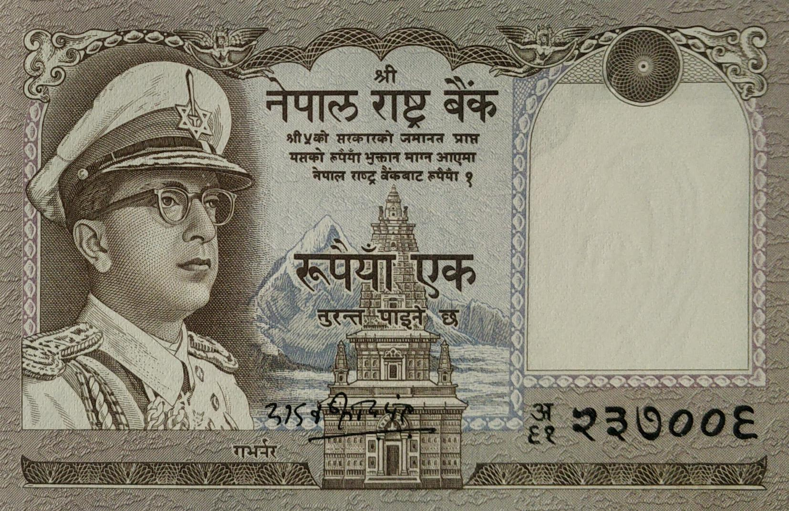

Himalaya Shumsher JBR (April 26, 1956 to Feb 7, 1961)


Yadav Prasad Pant (April 24, 1968 to April 28, 1973)

Yadav Prasad Pant (April 24, 1968 to April 28, 1973)
- Domination: Rupees 1
- Signature:
- Printer: De La Rue & Company, Ltd, UK
- Issued date: Between 1960 to 1971
- Front:
- Back:
- Watermark: Plumed crown
- Size:
Facts:
- 1 - Himalaya Shumsher JBR
- 5 - Yadav Prasad Pant
- - Dated coin on the left and watermark window on the right
- - King Mahendra wearing military uniform with a cap at left, Mahabaudha temple at center
- - Kalash, a holy vase and reserve of One rupee coin
- - Traditional wooden rotate swing
- - 64 x 102 mm
- - 70 x 106 mm